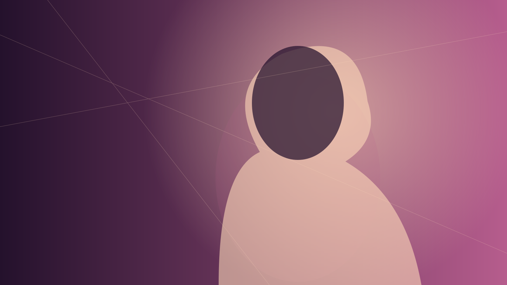

THE STORY
Meet Mayumi.
Music, identity and a creative spirit without borders.

SINGER · PERFORMER · CREATOR
A voice with a story.
Mayumi Kasuga is a Malaysian singer and performer. Her artistic background includes theatre, dance and acting, while her music draws from a mix of contemporary pop and cross-cultural influences.
Her single Satu explores togetherness and connection, combining elements of Japanese and Malay music with a modern pop sound.
Discover the music →GET IN TOUCH
Let's create something.
For performance bookings, collaborations and media enquiries.
Contact management →